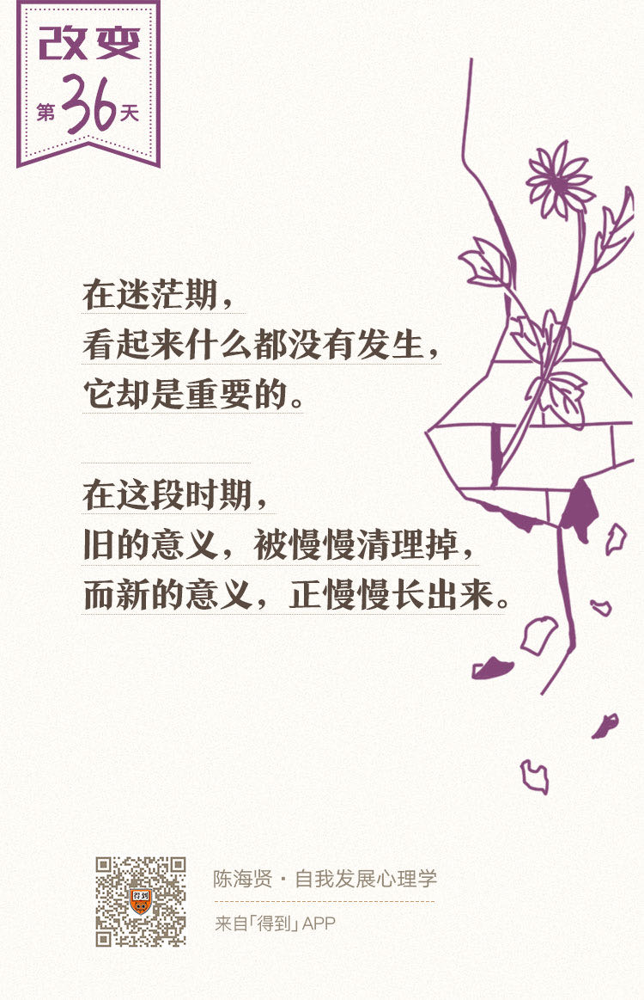

欢迎来到《自我发展心理学》。
你好，我是陈海贤。
上节课，我们讲到了转变的第一个阶段——结束。这节课，我们继续来讲转变的第二个阶段——迷茫。
迷茫源于意义感的缺失
很多人说，当他们真正结束的那一刻，他们的感觉不是焦虑，而是解脱。因为他们知道，他们已经从某个困扰他们的问题中解脱出来了。
可是，结束不是答案，相反，它会给我们提更多的问题。结束之后，迷茫就来了。
我听罗振宇老师讲过，他从央视离职以后，有很长的一段时间惶惶不可终日。大部分结束，都伴随着这样一段空虚和迷茫的时期。
很多时候，我们害怕结束，不仅是害怕结束带来的损失，而且还害怕结束之后，那一段空虚和迷茫的时期。
这种迷茫是怎么来的呢？
人的意义感有两个重要来源，一个是目标感。
人是通过有价值的目标把自己的现在和未来连起来的。如果没有目标，人们的工作和生活都会变成一种凑合的状态，这时候，他们就会变得空虚，缺少力量。
意义感的另一个来源，是人际关系。
事实上，人的意义感是在关系中编织出来的。如果你在生活中很孤独，缺少亲密关系，你不知道谁真的在乎你，你同样会觉得空虚和无聊。
说到这儿，你可能已经明白了，为什么结束以后，会紧跟着一段迷茫的时期。
因为，当我们跟原来的关系、原先的身份、原来的目标脱离的时候，我们也暂时失去了产生意义感的土壤。旧的生活已经过去了，而新的生活还没有到来。
你被留在一段很特别的意义感的真空里，不知道自己身在何处，会去往哪里。
迷茫中的三种典型心理
那么，对转变来说，这种迷茫又有什么作用呢？
我觉得，它像是一个特别的容器，只不过这个容器不是空间，而是你一个特定的人生阶段。在这个容器里，你需要整理过去，孕育未来。
我很难想象，一个人在经历结束以后，马上就能重新开始，完成重要的转变。可是，空虚和迷茫毕竟还是很难忍受的。所以人们就会产生一些典型的心理反应。
第一种反应：人们试图回到过去。
我说的回到过去，不是行动上的。毕竟我们在理智上也知道，一旦做了某些决定，就再也回不去了。
但是在心理上，我们却会以各种方式跟过去建立联系。其中一种常见的形式，就是拿现在的生活和过去的做比较。
我有一个朋友，毕业以后留在美国的一个投行工作，工资不错，还给自己租了一个很漂亮的房子。
可是刚工作不久，她就很不幸地没抽到工作签证，不得不在一年之后回国。可是回国以后，发现在北京找理想的工作不容易，而且国内公司给的工资也比原来的差了一大截。
那段时间，她在北京西二旗一个老小区租了一个房子。房子很小，已经有30年房龄了，没有电梯。房间墙上的石灰看得很清楚，厕所和厨房的水池都是黄黄的。
她经常盯着斑斑驳驳的墙面想：前几个月我还住着一个那么好的房子，为什么现在却只能住一个这样的房子了？想着想着，她就会很恍惚，觉得人生就像一场梦一样。
结束通常意味着损失，而损失常常会带来巨大的痛苦。迷茫期需要我们去消化和适应这种损失。
如果这种痛苦进一步加剧，我们不仅会把过去跟现在做比较，还会有另一种想回到过去的形式，那就是后悔。
很多身处迷茫期的人，会不停问自己：
“为什么别人的生活能这么安稳，我的生活却要这么折腾？”
“我是不是做错了什么，是不是我自己有问题，才会经历这些？”
这不是你的心理素质差，而是大脑应对结束和迷茫的方式。
大脑会本能地抗拒这种变化，让你尽快回到那张“意义之网”上，哪怕你心里知道，原先的那些意义，已经不再适用于你了。
我以前看过一篇文章，说弘一法师刚出家的时候，发现寺庙生活不像自己想象的那样，也是跟朋友表达过犹豫的。是朋友的劝说，加上他自己的坚持，才慢慢把心安下来，逐渐走上了佛法精进的道路，成了一代名僧。
你看，连弘一法师这样的高僧大德，都会有这样想回到过去的心理，更何况我们这些凡夫俗子。
迷茫期是痛苦的。所以我们想尽快逃离迷茫，回到过去。可是，当我们发现自己已经回不去的时候，我们就会有第二种反应：尽快结束迷茫，到达未来。
经常有朋友这样问我：
“我刚从一个新工作中离职，现在觉得情绪低迷，没有目标。我怎么才能尽快找回积极的心态，重新开始新生活？”
显然，他并不适应这段迷茫的时期，这让他觉得慌张。
如果我们不能尽快找到目标，就会不停地责怪自己：“我怎么这么无能，是我心理素质不好，连这点事都过不去。”
更进一步，他们会尽快选择一个开始。比如，马上找一份自己也不喜欢的工作，或者在分手以后马上陷入另一段恋爱，来逃避这种虚无和迷茫的感觉。
他们会不停地暗示自己：我已经好了，我已经好了，只是偶尔冒出来的空虚会让他们知道，因为躲避这种迷茫期，他们的转变，也在中途就终止了。
有时候，我会跟这些朋友说：
“也许在转变的这个阶段，我们就是需要低落和迷茫。转变有它自己的节奏，就像你没法略过冬天去经历春天一样，如果你急着让自己更积极、更充满自信，这反而会打破转变的节奏。
这段时间，也许你可以允许自己难过，允许自己无所事事，你只要耐心等待，看看会不会有什么新变化发生。”
既然回到过去和来到未来，都既无必要，也无可能，如果就呆在迷茫中，会怎么样呢？
这时候，人们就会有第三种典型的心理反应：他们的精神生活，开始变得敏感起来。
曾有个读者给我写信说，以前，她是一个很理性的人，平时只读一些“有用”的书。可是在那段迷茫期里，她能够静下心来看以前根本看不下去的文学作品了。
她说：“在我自我怀疑、自我否定，远离人群的时候，看到有人把这种痛苦、挣扎，还有可能的救赎诉诸文字的时候，就觉得自己一点都不孤单了。”
我猜，她可能在这些伟大的文学作品里，寻找到了新的意义。
我认识的另一个读者，因为最终发现自己并不喜欢所学的专业，在博士二年级的时候，从一个很著名的高校退学了。
他回家休养了一段时间，每天早早起来，一边跑步，一边听Beyond的歌。
原先他并不是一个多愁善感的人，可是在那段时间，听到Beyond在《海阔天空》里唱“多少次迎着冷眼与嘲笑，从未放弃心中的理想”这样的歌词，经常会泪流满面。
对精神生活的敏感并不是简单的矫情或者抑郁。
当人们从原有的意义中脱离出来以后，在新旧交替的阶段，他们获得了一种空间，跟一个更深更广的精神领域建立起联系，从更本质的视角来审视自己的生活。
也许人们在这个阶段体会到的东西，就是佛教说的无常，带着一些通透和悲悯。
在迷茫期，看起来什么都没有发生，它却是重要的。在这段时期，旧的意义，在被慢慢清理掉，那些新的意义，正慢慢长出来。
就像萧索的冬天在积蓄春天的力量，迷茫期也在积蓄重生的力量。
有无相生，如果说迷茫期是“无”的话，“无”里面有一种张力，蕴蓄着“有”。作为一段特殊的容器，这段迷茫期里，有过去自我的结束，也有未来自我诞生的种子。
这一讲，我们讲到了转变期的迷茫。我们讲了为什么会迷茫，以及迷茫期三种典型的心理反应：
人们会试图通过比较和后悔回到过去；
通过尽快重新开始达到未来；
人们在迷茫期时会变得更敏感。
这节课讲得有点模糊。万一你没太明白，也没关系，迷茫期本来就不是那么清晰的。可是如果你现在身处迷茫期，或者曾经身处迷茫期，我觉得你会懂。
既然已经模糊了，干脆再模糊一点。最后，我想用一段散文来结束这一讲。
这是里尔克（Rainer Maria Rilke）《给一个青年诗人的十封信》里的一段话，也是上面那位在迷茫期开始读文学作品的读者推荐给我的。里尔克说：
里尔克的这段话说的是：病是有机体让自己康复的方式，就像迷茫是让我们重新清晰的方式。
假如我们要为转变期的迷茫寻找一种意义的话，这就是它的意义。
下节课，我们继续讲转变的最后一个阶段——重生。
我们下节课见。
